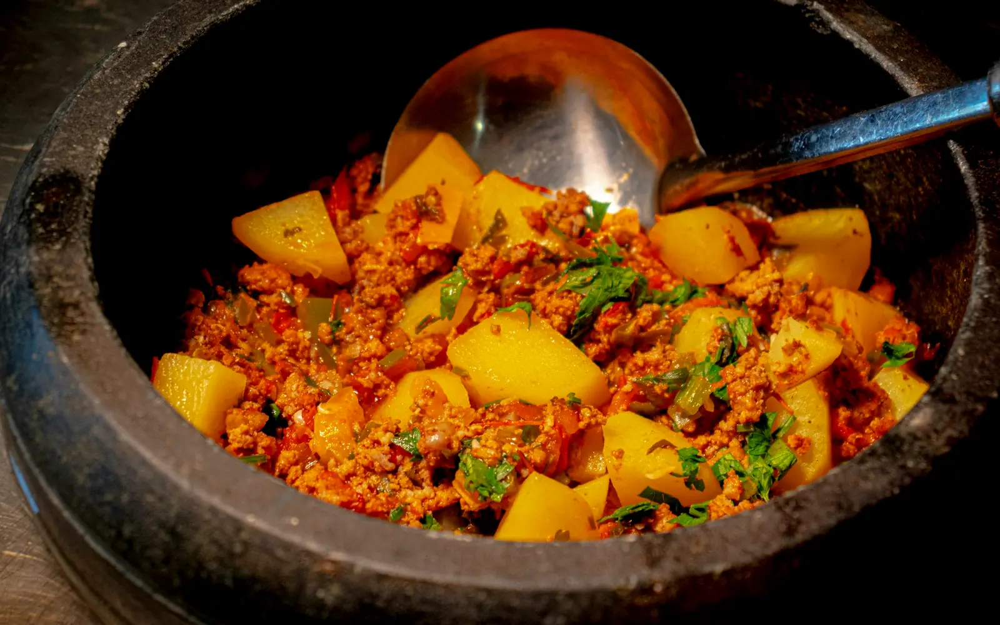

12 dishes
Bengali
Potato, poppy seed and mustard
Pick a dish and cook it tonight.
01
Dishes
8 recipes IndiaAloo Posto30 minMediumKhus khus ke masale mein bane naram Bengali aloo.
IndiaAloo Posto30 minMediumKhus khus ke masale mein bane naram Bengali aloo. IndiaCholar Dal45 minMediumChana dal aur nariyal ki halki meethi Bengali dal.
IndiaCholar Dal45 minMediumChana dal aur nariyal ki halki meethi Bengali dal. IndiaShukto45 minMediumKarela, kachche kele aur sabziyon ki halki kadvi-meethi Bengali sabzi.
IndiaShukto45 minMediumKarela, kachche kele aur sabziyon ki halki kadvi-meethi Bengali sabzi. IndiaBegun Bhaja20 minEasyHaldi aur namak lagi, sarson ke tel mein talni hui baingan ki kali.
IndiaBegun Bhaja20 minEasyHaldi aur namak lagi, sarson ke tel mein talni hui baingan ki kali. IndiaDhokar Dalna60 minHardChana dal ke tali hue chaukor tukde, masaledaar gravy mein.
IndiaDhokar Dalna60 minHardChana dal ke tali hue chaukor tukde, masaledaar gravy mein. IndiaLuchi30 minMediumMaide ki phooli hui, ghee mein tali hui Bengali puri.
IndiaLuchi30 minMediumMaide ki phooli hui, ghee mein tali hui Bengali puri. IndiaChhanar Dalna40 minMediumGhar ke taaze chhane ki halki masaledaar gravy.
IndiaChhanar Dalna40 minMediumGhar ke taaze chhane ki halki masaledaar gravy. IndiaBengali Aloor Dom40 minMediumChhote aloo ki halki meethi, masaledaar gravy, luchi ke saath.
IndiaBengali Aloor Dom40 minMediumChhote aloo ki halki meethi, masaledaar gravy, luchi ke saath.02